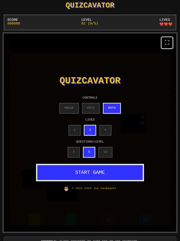
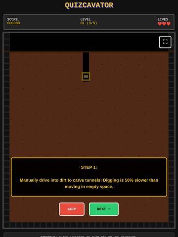
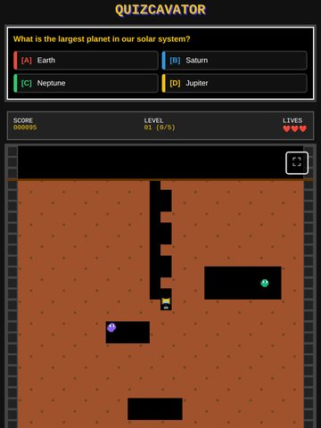

Learning game · HTML / JavaScript
Quizcavator
A digging quiz, built to turn software training review into something people want to replay.
A digging game: carve tunnels through the dirt down to the block with the right answer. Enemies burrow through the dirt after you; rings of air from your blaster knock them dizzy, and enough hits burst them into debris.
This demo: easy general trivia (geography, science, animals, history, and more). In training, it reviewed Asana basics.
Controls: WASD or arrow keys to dig and Space to blast, or click anywhere to auto-dig and click an enemy to blast it. On a phone or tablet, use the D-pad and the BLAST button.
Tip: click inside the game first so it can detect your keyboard. On a small screen, try the full-screen version.
Screenshots






Design features
Make your own quiz game!
Type in your own multiple-choice questions and get a copy of Quizcavator that asks them instead. Save it to your desktop and double-click to play, send it to your students or team, or put it on your own website. Each question can have 2 to 4 answer choices; click the circle next to the right one.
Want to change more than the questions? The Quizcade Builder edits everything in Quizcavator and its sister games: the on-screen words, rules, colors, sprites, and backgrounds. You can paste questions in from a spreadsheet, watch a live preview, and copy paste-ready HTML for a web page, an embed, or a Rise 360 Code block.